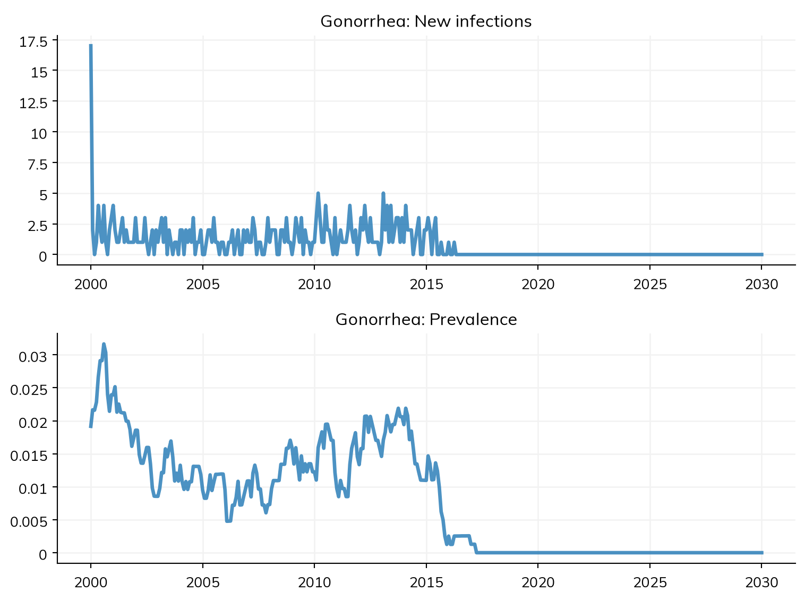
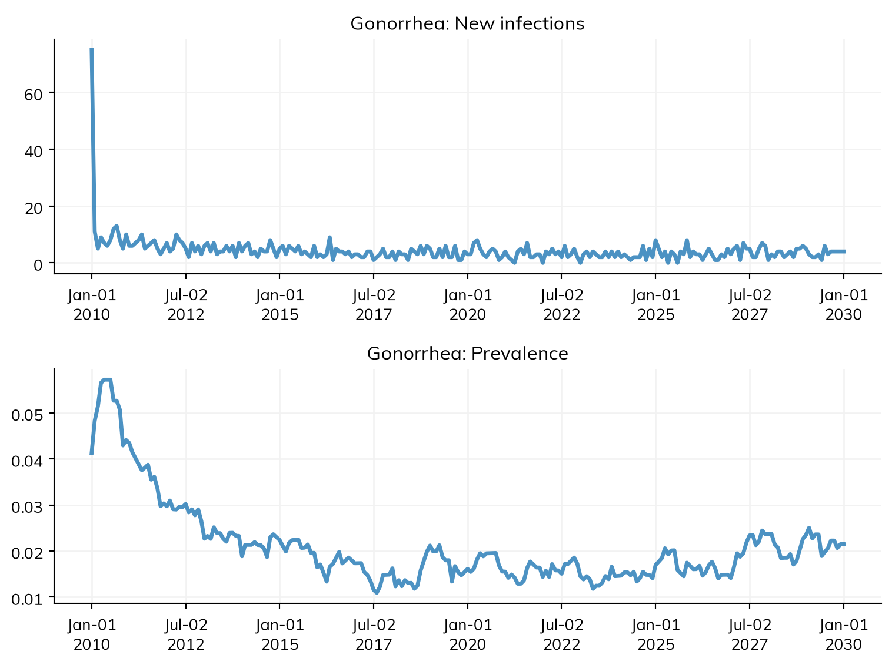

import stisim as sti
sim = sti.Sim(diseases='ng')
sim.run(verbose=0)
sim.plot(key=['ng.new_infections', 'ng.prevalence'])Initializing sim with 1000 agents
Figure(768x576)
STIsim is an agent-based modeling framework for sexually transmitted infections, built on top of Starsim. It provides disease models (HIV, syphilis, chlamydia, gonorrhea, trichomonas, BV), structured sexual networks with risk groups, demographics, and interventions.
STIsim follows the Starsim philosophy: common tasks should be simple. Creating and running a simulation takes just a few lines of code.
The simplest way to create an STIsim simulation is to pass a disease name as a string. Here we’ll simulate gonorrhea:
Initializing sim with 1000 agents
Figure(768x576)
Here we provided specific keys to plot (ng.new_infections and ng.prevalence). You can also call sim.plot('ng') to see all the high-level gonorrhea results, or just sim.plot() to see everything. For more on working with results, see the Results and plotting tutorial.
Three lines of code: create, run, plot. But a lot just happened behind the scenes. Let’s unpack what’s in the box.
When you call sti.Sim(diseases='ng'), STIsim creates a complete simulation with sensible defaults. Here’s what gets set up automatically:
The simulation runs from 2000 to 2030 with monthly timesteps and 1,000 agents by default. You can inspect these:
Initializing sim with 1000 agents
Start: 2000
Stop: 2030
Timestep: 0.08333333333333333 years (1 month)
Agents: 1000Two networks are created automatically:
The string 'ng' was looked up and converted into an sti.Gonorrhea module with default parameters (transmission rate, initial prevalence, symptom probabilities, clearance durations, etc.). See the Diseases documentation for the full parameter tables.
Disease: Gonorrhea
Transmission (M to F): 0.06
Initial prevalence: ss.bernoulli(p=0.01)
Condom efficacy: 0.9By default (without a location string), no demographic modules are created – there are no births, deaths, or migration. This keeps the default sim fast and simple. To add demographics, either pass modules directly or provide a location string:
There are multiple ways to configure a sim, depending on how much control you need.
The simplest way – pass keyword arguments directly:
Use sti_pars to override disease defaults without creating the disease object yourself:
For full control, create the module objects directly. This is the standard Starsim pattern and gives you access to every parameter:
import starsim as ss
ng = sti.Gonorrhea(beta_m2f=0.08, init_prev=0.03)
nw = sti.StructuredSexual()
pregnancy = ss.Pregnancy(fertility_rate=20)
deaths = ss.Deaths(death_rate=10)
sim = sti.Sim(
diseases=ng,
networks=nw,
demographics=[pregnancy, deaths],
n_agents=2000,
start=2010,
stop=2030,
)
sim.run(verbose=0)
sim.plot(key=['ng.new_infections', 'ng.prevalence'])Initializing sim with 2000 agents
Figure(768x576)
STIsim includes the following disease modules, which can be passed by name or as instances:
| Name | Class | String alias | Type |
|---|---|---|---|
| HIV | sti.HIV |
'hiv' |
CD4-based progression |
| Syphilis | sti.Syphilis |
'syphilis' / 'syph' |
Staged (primary/secondary/latent/tertiary) |
| Chlamydia | sti.Chlamydia |
'ct' |
SEIS |
| Gonorrhea | sti.Gonorrhea |
'ng' |
SEIS |
| Trichomoniasis | sti.Trichomoniasis |
'tv' |
SEIS with persistence |
| Bacterial vaginosis | sti.BV |
'bv' |
CST-based |
| Genital ulcer disease | sti.GUD |
'gud' |
Simple SIS |
See the Diseases documentation for state diagrams and parameter tables for each disease.
beta_m2f) from 0.06 to 0.15 and observe how it affects prevalence.demographics='zimbabwe' and compare the results to the default (no demographics) sim.